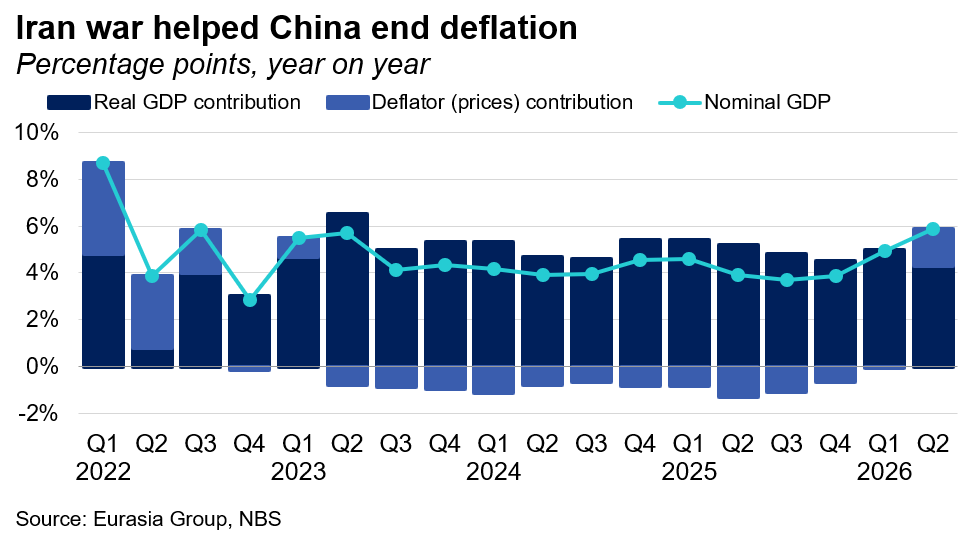
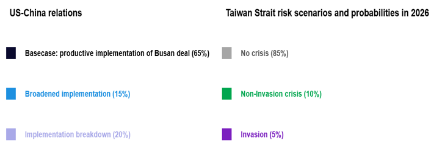

Economic Policy
Government will stay the course on stimulus amid record-low real GDP growth rate. The reported 4.3% real GDP figure in the second quarter was the lowest on record, excluding the pandemic years of 2020-2022. The overall 4.7% first-half growth rate, however, remains in line with the full-year target of 4.5%-5%. Nominal GDP rose to 5.9% in the second quarter due to rising prices for energy and materials linked to the Iran crisis (see chart below).
- Reflation is not a signal of domestic demand. Core CPI is down for a second month, while the 4.1% rise in PPI is increasingly a base-effect artifact and is mostly driven by a supply shock in raw materials and energy. Economy-wide inflation (as measured by the deflator) was above 2%, meaning China has technically exited multi-year deflation, but the gains are neither broad nor durable—only eight of 30 sectors rose month-on-month in June, clustered in the AI supply chain and supply-constrained resources such as coal.
- Growth in the first half was lopsided. In nominal terms, per capita consumption expenditure rose just 3.7%, and fixed-asset investment contracted 5.7% (property and infrastructure both fell by double digits), while industrial output was up 5.4% in real terms, powered by high-tech exports. Auto sales, hit by fading electric vehicle subsidies and weak demand for traditional cars amid high fuel prices, drove the retail slump.
- Beijing is prepared to wait for worse data before acting. With growth technically still on target, policymakers are prioritizing strengthening the techno-industrial base and maintaining credit discipline over near-term demand support. If net exports falter in the third quarter, expect Beijing to accelerate existing fiscal and infrastructure projects rather than launching a new stimulus package.

United States/China
NDAA talks will likely dilute China export control bills amid White House pressure. On 14 July, the Senate National Defense Authorization Act (NDAA) manager's package included three export control bills targeting China: the AI Overwatch Act, the MATCH Act, and the Chip Security Act. On the same day, Bureau of Industry and Security (BIS) Director Jeffrey Kessler told a House Foreign Affairs Committee hearing that there will be future regulatory action on chips and AI.
- The export control bills will not necessarily be included in the final NDAA. Their fate will depend on negotiations among the House, Senate, and White House, meaning that some provisions could be traded away or diluted before being included (see: Defense and agriculture funding on track via reconciliation or otherwise, 16 July 2026). Affected companies will lobby against inclusion of the bills in their current form.
- The administration remains reluctant to pursue more aggressive export controls. In his hearing, Kessler was forced to defend BIS’s policy inertia without admitting that it reflects a political choice to preserve stability with Beijing. While Kessler did mention regulatory actions in the future, he did not provide any specifics. The administration's clear preference for narrow and targeted measures puts it at odds with congressional hawks advocating for more comprehensive restrictions.
- China will calibrate its response to any eventual export control action. If BIS does proceed with new chip and AI rules, Beijing's retaliation will depend on whether those measures disrupt access to technologies that it currently relies on or constrain next-generation capabilities it has yet to acquire. The latter scenario is likely to be more tolerable for China.
Foreign Policy
Xi will promote China’s alternative approach to AI governance. President Xi Jinping will for the first time attend the annual World AI Conference (WAIC) in Shanghai from 17-20 July. He will deliver a closely watched speech in which he will likely emphasize China’s Global AI Governance Initiative and contrast the country’s support for AI as an international public good with the closed-source approach of leading US AI companies.
- Xi’s attendance will focus global attention on this year’s WAIC. His participation—Premier Li Qiang attended the last two years—demonstrates Beijing’s desire to elevate the importance of the WAIC and to contrast China’s approach to global AI governance with that of the US. It remains unclear if Xi will also announce new initiatives or increased support for China’s AI industry.
- Beijing will claim to serve the interests of Global South countries with its global AI governance model. China has called for strengthening AI capacity building in less developed countries, where its lower cost and open-source AI models are especially attractive, even as Chinese authorities are reportedly considering restricting overseas access to the country’s most advanced AI models.
- China will concurrently explore deeper AI cooperation with the US. Chinese officials express cautious enthusiasm for the AI Working Group that emerged from Xi’s summit with President Donald Trump in May. However, they also acknowledge the bureaucratic challenges and strategic mistrust that will likely hinder any agreement on common AI governance standards.
Politics
Xi’s anticorruption drive increasingly threatens political networks. The Chinese Communist Party (CCP) formally expelled Politburo member Ma Xingrui on 14 July on charges of political disloyalty, failures of oversight, bribery, family corruption, and sexual impropriety, according to the official readout. This case suggests that in the lead-up to the 2027 Party Congress, Xi will increasingly seek to disrupt whole patronage networks, rather than just individuals, in the name of anticorruption.
- Ma’s expulsion is the last nail in the coffin after authorities announced his downfall on 3 April (see: Another senior purge further consolidates Xi’s centralized position and command, 3 April 2026). The mix of offenses he is charged with points to his role at the center of a broader patronage network of officials with backgrounds in the aerospace manufacturing sector, suggesting Xi seeks to target not just Ma but his associates. Former minister of Industry and Information Technology Jin Zhuanglong, another figure from that network, has not appeared in public since February 2025.
- Investigations on 6 June into another senior official, Wei Xiaodong, are a watchpoint. As Beijing’s former organization chief, Wei oversaw the appointment of officials across the party and government within the city. If scrutiny widens to officials he promoted, the case will look less isolated and more like pressure on a broader network.
- If the investigation is broadened, Wei’s case will suggest that the retirement of former head of the party school Chen Xi on 5 June had more political significance than anticipated (see: Xi continues to leave the successor question unresolved, 11 June 2026). As the head of the CCP Central Organization Department from 2017-2022, Chen elevated Wei in Beijing.
Standing calls

Notes underpinning calls:
April summit will yield new purchase commitments and maintain truce, 5 February 2026
Latest dismissals deepen military turmoil and lower Taiwan risk, 26 January 2026
Upcoming Events
- Late July: Conclusion of US 301 investigations (Section 122 tariffs expire 24 July)
- Last week of July: CCP Politburo will discuss the economy
- Early August: CCP leadership will have its annual summer retreat at Beidaihe
- 12-13 September: BRICS Summit
- 24 September: Xi will likely visit the US
- 22-29 September: UN General Assembly high-level meetings
- 27 September: Six-month deadline for China’s trade investigations
- 1-7 October: China’s National Day/Golden Week
- 10 October: Taiwan’s National Day
- 21-23 October: Bund Summit in Shanghai (estimated dates)
- 10 November: End of one-year suspension of US–China tariffs, Bureau of Industry and Security 50% ruling, Chinese export controls, port fees
- 18–19 November: APEC summit in Shenzhen
- 28 November: Taiwan local elections
- 14–15 December: G20 leaders’ summit in Miami